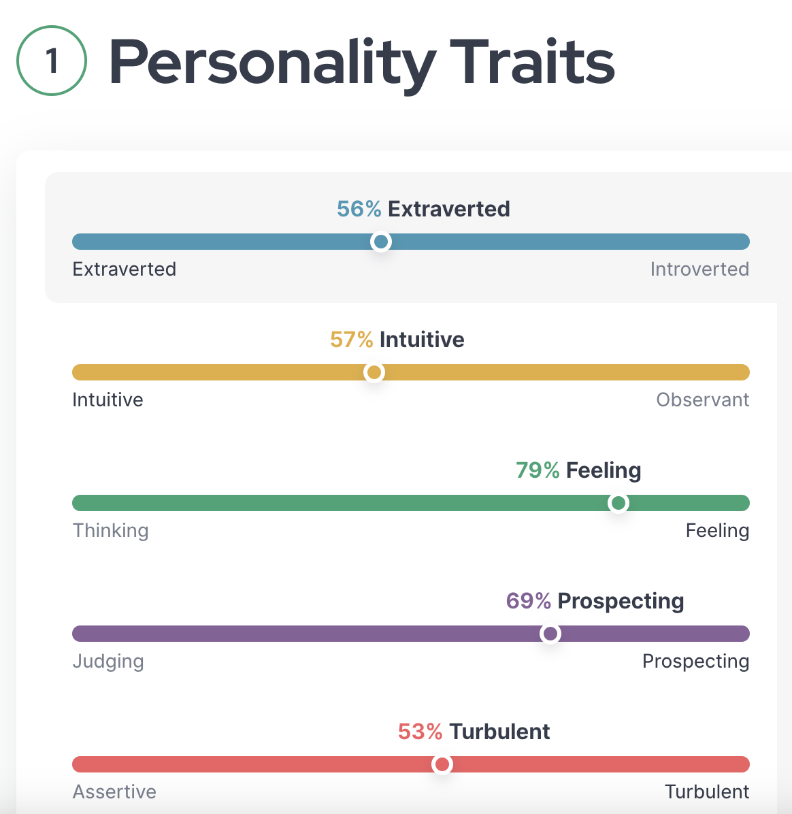

The ENFP-T Personality
Traits & School Life
My extroverted personality and endless energy, as an ENFP-T, shine across my academic life like a spotlight on a stage. I used to frequently bring my guitar to school (back in high school) to break the ice and start spontaneous jam sessions between classes. Making friends came effortlessly to me. Whether I'm working with others on projects or engaging in heated discussions, my social energy creates a lively environment that motivates everyone around me. It's entertaining to combine my passion of games with my academics. I frequently approach homework using game tactics, which transform even the most difficult jobs into thrilling journeys. I welcome new experiences every day, forming relationships and creating memories that make learning an exciting journey.
My Hero
Since the show's debut in 2014, I have been a huge fan of The Flash, who I consider to be my hero. My respect for him has remained
constant despite all of the ups and downs the seasons have brought. The thing I adore most about The Flash is his unbreakable will
and his courage to keep going despite overwhelming obstacles. He exemplifies what it means to be a true superhero—someone who always
sees the best in people and goes to great lengths to save them all. One of my favorite scenes, in which he outruns time itself to save
an entire city from a nuclear disaster, brilliantly encapsulates his spirit. That moment is a monument to his unwavering hope and bravery
rather than merely his amazing speed. I'm motivated to move on and see the good in people by The Flash, who serves as a constant reminder
that no task is too big for someone who is prepared to stand up for what's right.

Personality Tests


To briefly talk about these three tests, I believe I was very factual in my responses and I also do believe that my personality is mostly like what is reflected so I believe there is truth and validity to these tests and even made me realize truths about myself that I did not know before.